第08讲 有理数的混合运算
第08讲 有理数的混合运算
课程标准 | 学习目标 |
①掌握有理数的运算法则 ②有理数运算的应用 | 1．掌握有理数的加减乘除及其乘方的混合运算； 2．灵活应用有理数的运算法则解决问题； |

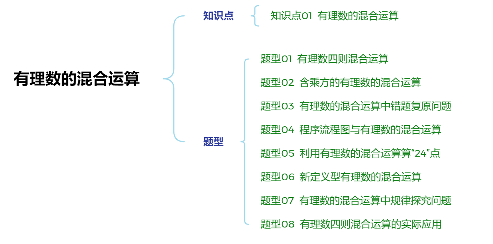

知识点01 有理数的混合运算
（1）先乘方，再乘除，最后加减。
（2）同级运算，从左到右的顺序进行。
（3）如有括号，先算括号内的运算，按小括号，中括号，大括号依次进行。在进行有理数的运算时，要分两步走：先确定符号，再求值。
【即学即练1】
1．（23-24六年级下·全国·假期作业）计算下列各题：
(1)
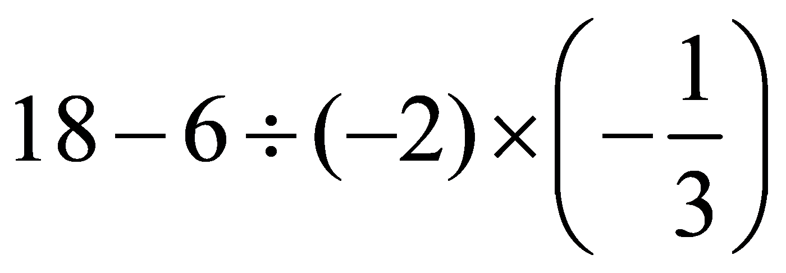
(2)
(3)
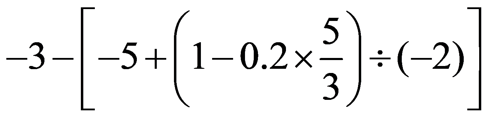
(4)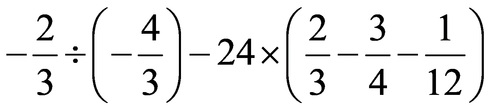

题型01 有理数四则混合运算
【典例1】（23-24七年级上·宁夏银川·期末）计算
(1)
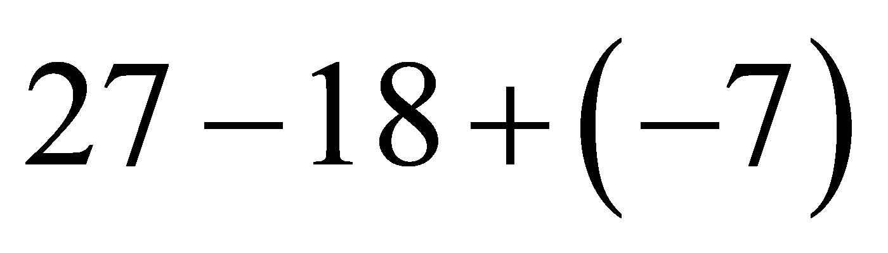
(2)
(3)
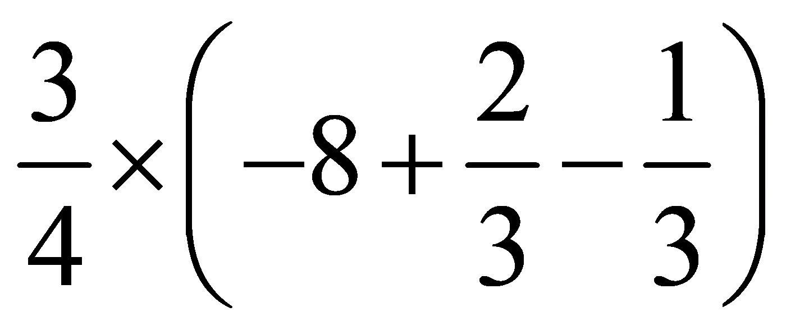
(4)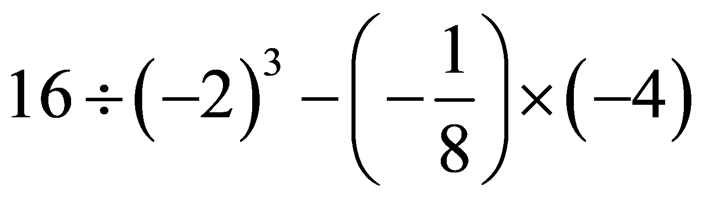
【变式1】（23-24七年级上·河南安阳·期中）计算
(1)
(2)
(3)
【变式2】（23-24七年级下·重庆九龙坡·开学考试）计算：
(1)
(2)
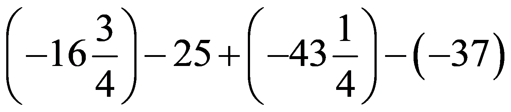
(3)
(4)
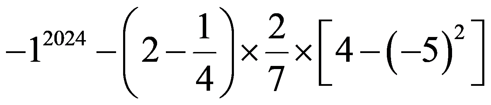
【变式3】（23-24七年级上·四川眉山·阶段练习）计算：
(1)
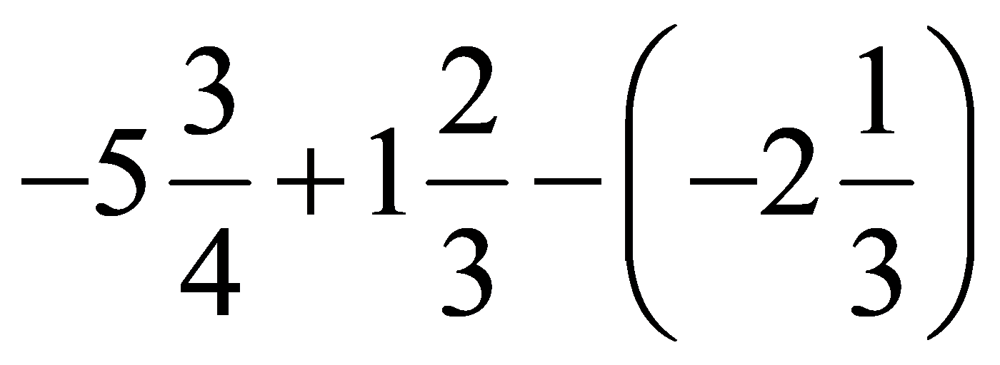
；(2) ；
；
(3)
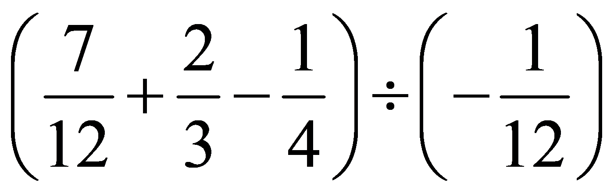
；(4)
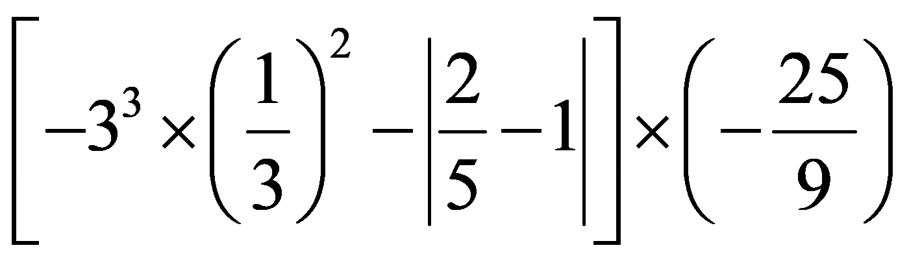
；(5)
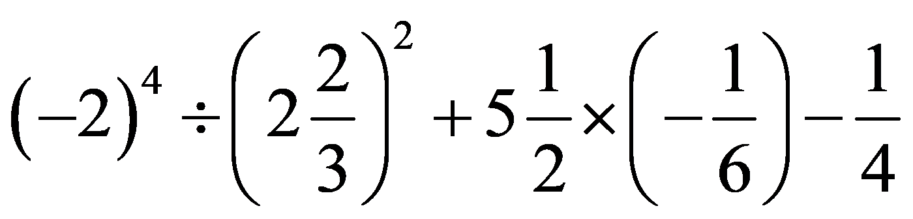
；(6)
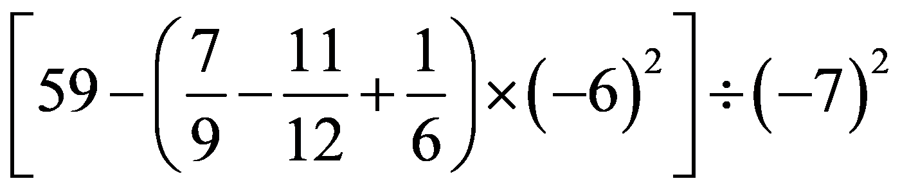
．题型02 含乘方的有理数的混合运算
【典例2】（23-24七年级上·湖北荆门·单元测试）计算：
(1) ； (2)
； (2) ．
．
【变式1】（23-24七年级上·安徽合肥·单元测试）计算：
(1) ． (2)
． (2) ．
．
【变式2】（23-24七年级上·安徽合肥·期末）计算：
(1) (2)
(2)
【变式3】（23-24七年级上·安徽合肥·单元测试）计算：
(1) ； (2)
； (2) ．
．
题型03 有理数的混合运算中错题复原问题
【典例3】（23-24七年级上·河南南阳·阶段练习）小兰在计算：
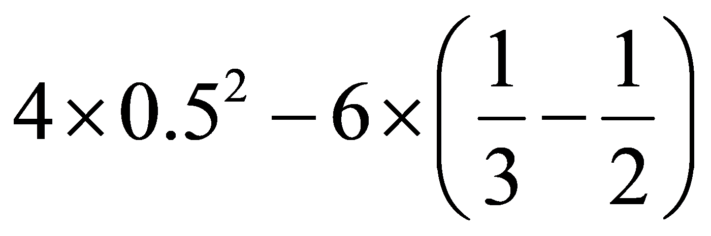
时，步骤如下：解：原式 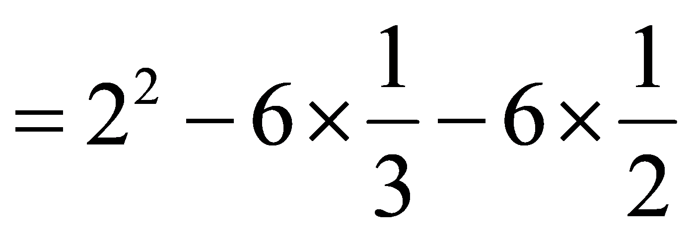 ①
|
 ②
② ③
③(1)小兰的计算过程中开始出现错误的步骤是______（填序号），错误的原因是______；
(2)请给出正确的解题过程．
(3)计算：
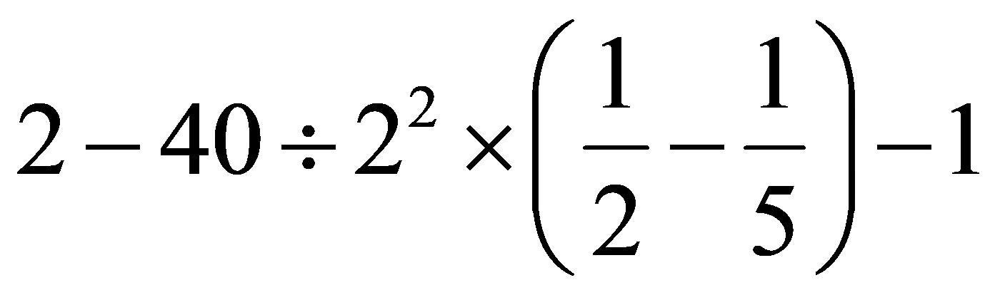
．【变式1】（22-23七年级上·浙江衢州·阶段练习）下面的计算错在哪里？指出错误步骤的序号，并给出正确的解答过程．

 ①
①
 ②
②
 ③
③
【变式2】（22-23七年级上·宁夏银川·期中）阅读下面的解题过程：
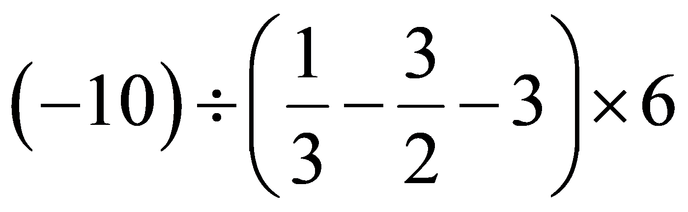
解：
＝
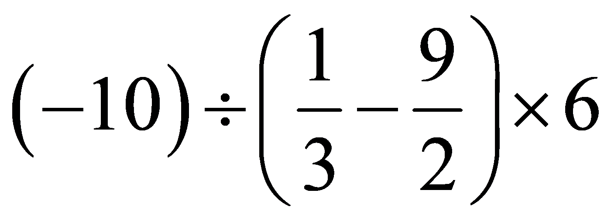
＝ （第一步）
（第一步）
＝
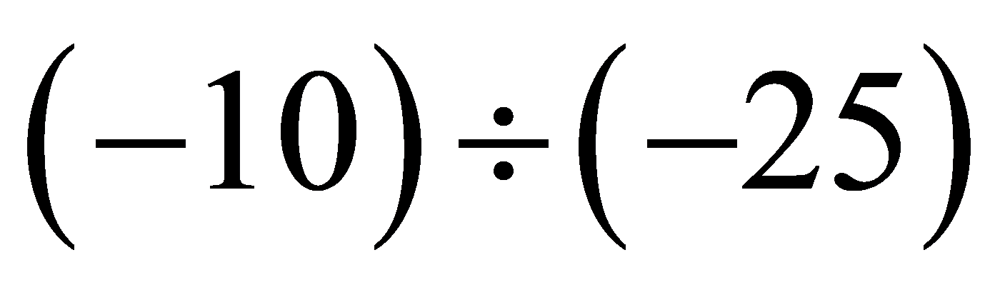
（第二步）＝ （第三步）
（第三步）
回答：
(1)解题过程中有两处错误，第一处是第______步，错误原因是______；第二处是第______步，错误的原因是____________．
(2)正确的结果是__________________．
【变式3】（23-24七年级上·宁夏银川·期末）计算：
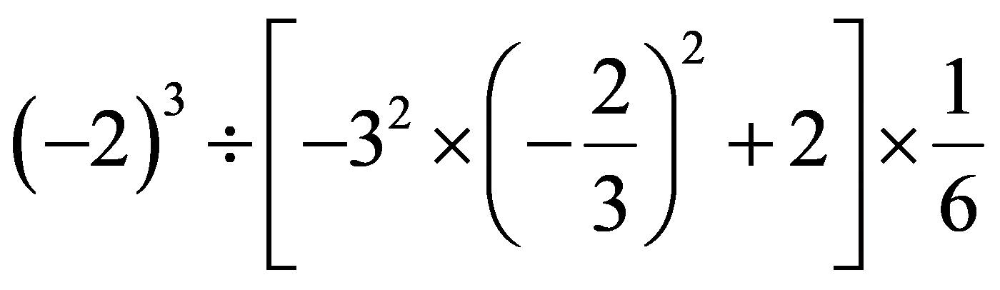
下面是小颖的解答过程，请认真阅读并完成任务：
原式
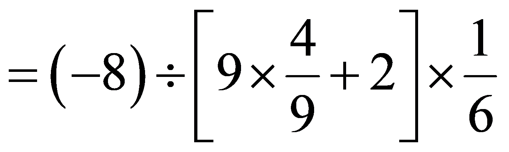
第一步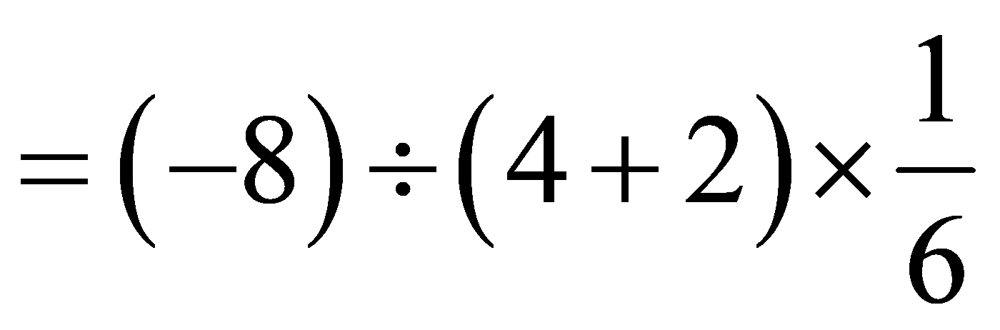
第二步 第三步
第三步
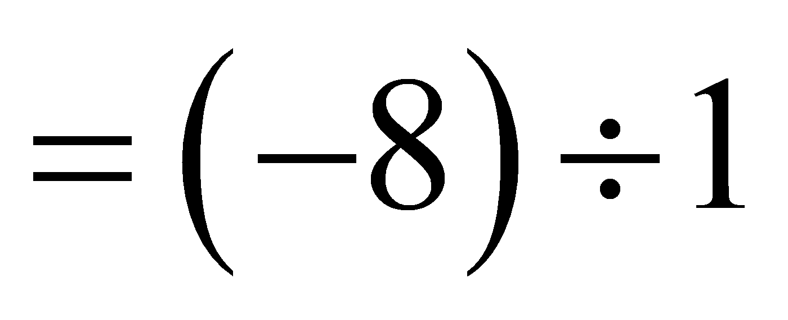
第四步 第五步
第五步
(1)任务一：小颖的解答过程共存在两处错误，分别在第________步和第________步；
(2)任务二：请写出正确的解答过程.
题型04 程序流程图与有理数的混合运算
【典例4】（22-23七年级上·河北沧州·期中）洪洪同学在电脑中设置了一个有理数的运算程序：输入数“ ”加“★”键，再输入“
”加“★”键，再输入“ ”，就可以得到运算
”，就可以得到运算 ．按此程序
．按此程序 ．
．
【变式1】（23-24七年级上·河北石家庄·期末）小明在电脑中设置一个有理数运算程序：输入数，加 键，再输入数，就可以得到运算：
键，再输入数，就可以得到运算：
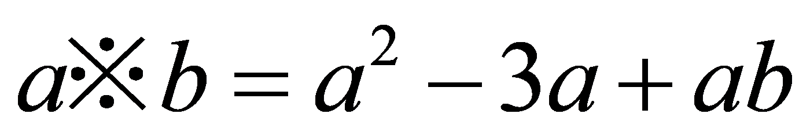
．则 的值为 ．
的值为 ．【变式2】（24-25七年级上·全国·随堂练习）如图，是一个有理数运算程序的流程图，请根据这个程序回答问题：当输入的x为 时，最后输出的结果y是 ．
时，最后输出的结果y是 ．

【变式3】（22-23七年级上·河南平顶山·期中）如图，是一个有理数混合运算程序的流程图，请根据这个程序回答问题：当输入的x为 时，最后输出的结果y是多少？（写出计算过程）
时，最后输出的结果y是多少？（写出计算过程）

题型05 利用有理数的混合运算算“24”点
【典例5】（23-24七年级上·湖北荆门·单元测试）如图，小聪有4张写着不同数字的卡片，请你按要求抽出卡片，完成下列问题：

(1)从中取出两张卡片，使这两张卡片上数字的乘积最大，如何抽取？最大值是多少？
(2)从中取出两张卡片，使这两张卡片上的数字组成一个最大的数，如何抽取？最大的数是多少？
(3)将这4张卡片上的数字用学过的方法计算，使结果为24，写出运算式子．（写出一种即可）
【变式1】（22-23七年级上·江苏扬州·期中）有一种“24”点游戏，其游戏规则是：任取一副扑克牌，我们约定A为1，并规定方块、红桃牌为正，黑桃、梅花牌为负．任取4张牌（可使用括号）．每个数用且只用一次，使其结果等于24．
如：抽出4张牌黑桃4、梅花2、方块4、红桃3，可做运算：
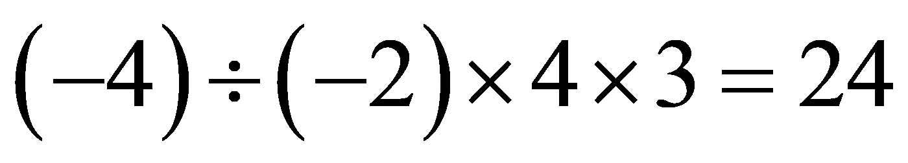
．(1)若抽出黑桃3，梅花1，方块5，红桃3，请写出1种算式，并写出计算过程，验证结果为24；
(2)若抽出黑桃3、梅花K、方块8、红桃Q，请写出2种不同的算式，并写出计算过程，验证结果为24；
(3)若抽出黑桃4、梅花7、方块2、红桃3，请设计1种含“乘方”的混合运算的算式，并写出计算过程，验证结果为24．
【变式2】（23-24七年级上·江苏淮安·阶段练习）小明有5张写着不同数字的卡片，请你按要求抽出卡片，完成下列问题：
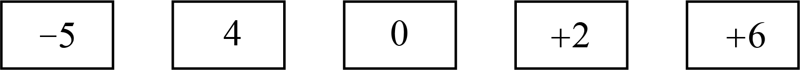
(1)从中2张卡片，使这2张卡片上数字的乘积最大，如何抽取，最大值是多少？
(2)从中抽取2张卡片，使这两张卡片数相除的商最小，如何抽取，最小值是多少？
(3)从中取出4张卡片，用学过的运算方法，使结果为24．写出运算式子．（写出一种运算式）．
【变式3】（23-24七年级上·江苏南京·阶段练习）小明有5张写着不同数字的卡片，请你按要求抽出卡片，完成下列各问题：
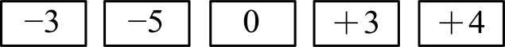
(1)从中取出2张卡片，使这2张卡片上数字的乘积最大，如何抽取？最大值是多少？
答：我抽取的2张卡片是 、 ，乘积的最大值为 ．
(2)从中取出2张卡片，使这2张卡片上数字相除的商最小，如何抽取？最小值是多少？
答：我抽取的2张卡片是 、 ，商的最小值为 ．
(3)从中取出2张卡片，使这2张卡片上数字组成一个最大的数，如何抽取？最大的数是多少；
答：我抽取的2张卡片是 、 ，组成一个最大的数为 ．
(4)从中取出4张卡片，用学过的运算方法，使结果为24．如何抽取？写出运算式子．（写出一种即可）．
答：我抽取的4张卡片算24的式子为 ．
题型06 新定义型有理数的混合运算
【典例6】（23-24七年级下·安徽合肥·期末）对于任意非零实数a，b，定义运算“ ”如下：
”如下：
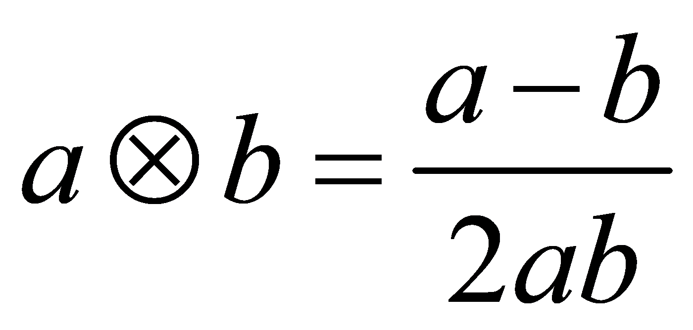
，则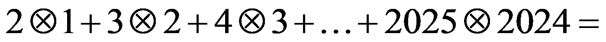
．【变式1】（23-24七年级上·浙江温州·阶段练习）定义一种新运算“”，规则为：
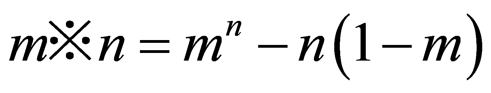
例： ，则
，则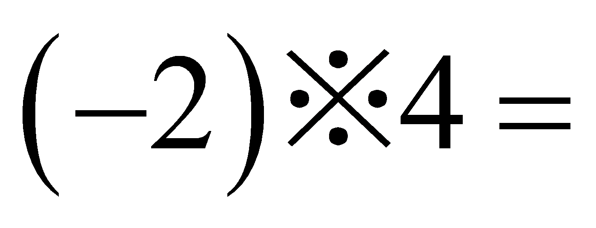
．【变式2】（2024·河南南阳·一模）数学小组定义一个新运算“”如下：
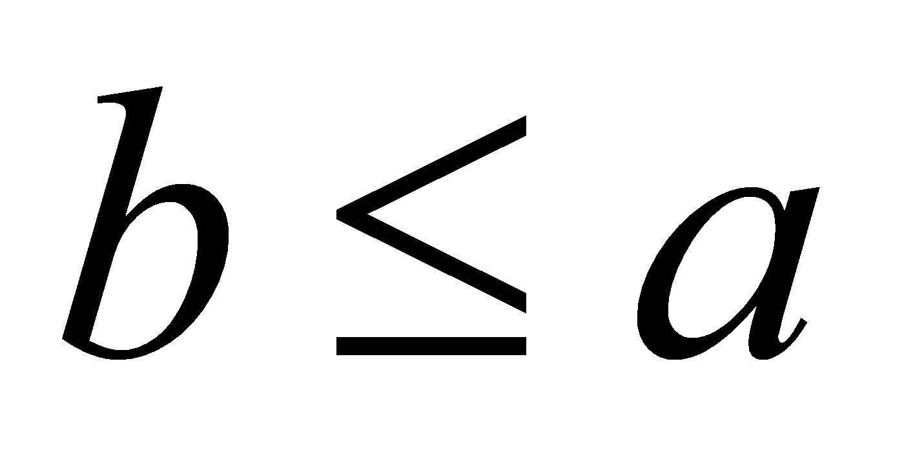
时， ；
； 时，
时， ．则当
．则当 时，代数式
时，代数式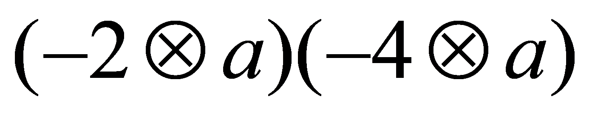
的值为 ．【变式3】（23-24七年级上·重庆垫江·阶段练习）定义一种对正整数n的“F”运算：
①当n为奇数时，
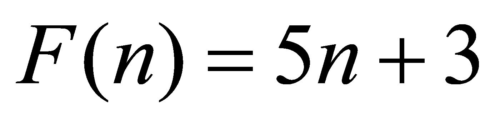
；②当n为偶数时， （其中，k是使
（其中，k是使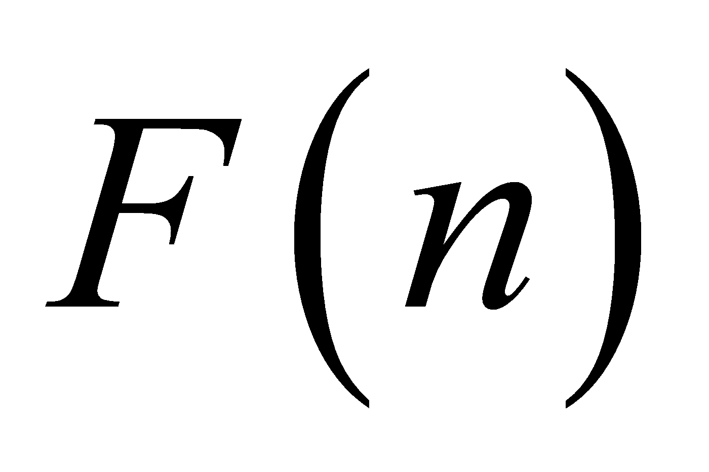
为奇数的正整数），……，两种运算交替重复进行，例如，取 ，则运算过程如图所示：
，则运算过程如图所示：
若 ，则第2023次“F”运算的结果是 ．
，则第2023次“F”运算的结果是 ．
题型07 有理数的混合运算中规律探究问题
【典例7】（23-24七年级上·四川成都·期末）观察下列等式：
第1个等式：
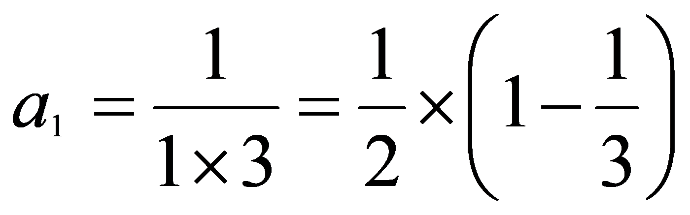
；第2个等式： ；
；
第3个等式： ；
；
第4个等式： ．
．
请解答下列问题：
(1)按以上规律列出第5个等式：
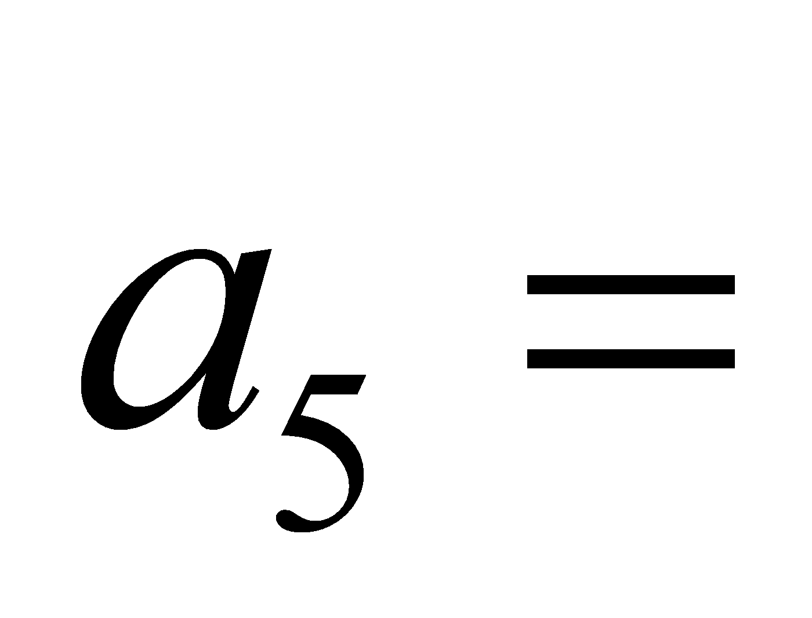
．(2)用含有n的代数式表示第n个等式： （n为正整数）；
（n为正整数）；
(3)求 ．
．
【变式1】（2023·河北张家口·模拟预测）观察以下等式：
①
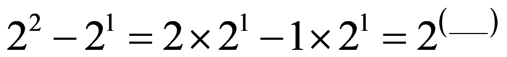
，② ______
______ ，
，
③ ______，
______，
……
探究：
（1）观察等式①②③的规律，并将等式补充完整；
（2）请直接写出第④个等式；
拓展：
（3）按照你发现的规律，写出第n个等式；
（4）计算：
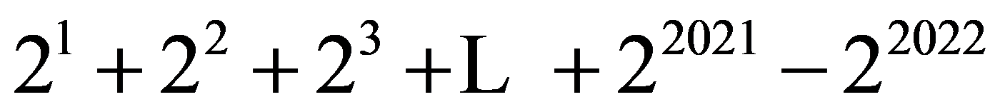
．【变式2】（22-23九年级上·广东湛江·期中）观察下列各式的计算结果：

(1)用你发现的规律填写下列式子的结果：
 × ；
× ；
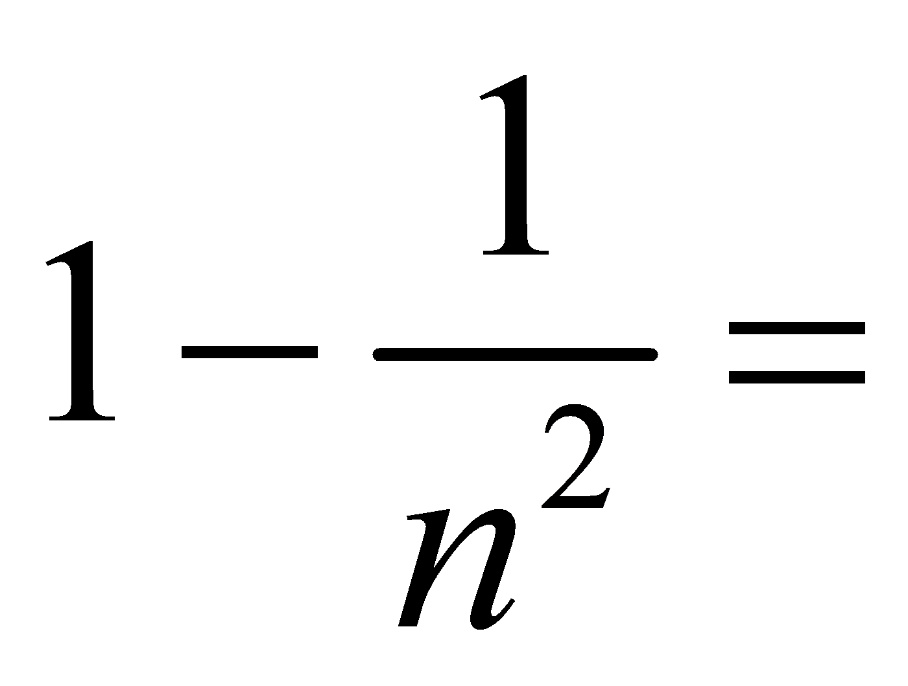
× ．(2)用你发现的规律计算：
【变式3】（24-25七年级上·全国·随堂练习）观察下列各式：


…
(1)猜想
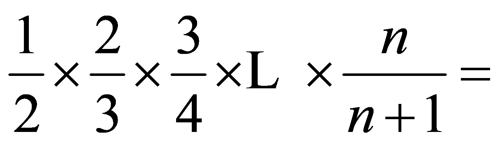
_______(2)根据上面的规律，解答下列问题：
①
②将 减去它的
减去它的 ，再减去余下的
，再减去余下的 ，再减去余下的
，再减去余下的 ，再减去余下的
，再减去余下的 ，以此类推，直到最后减去余下的
，以此类推，直到最后减去余下的
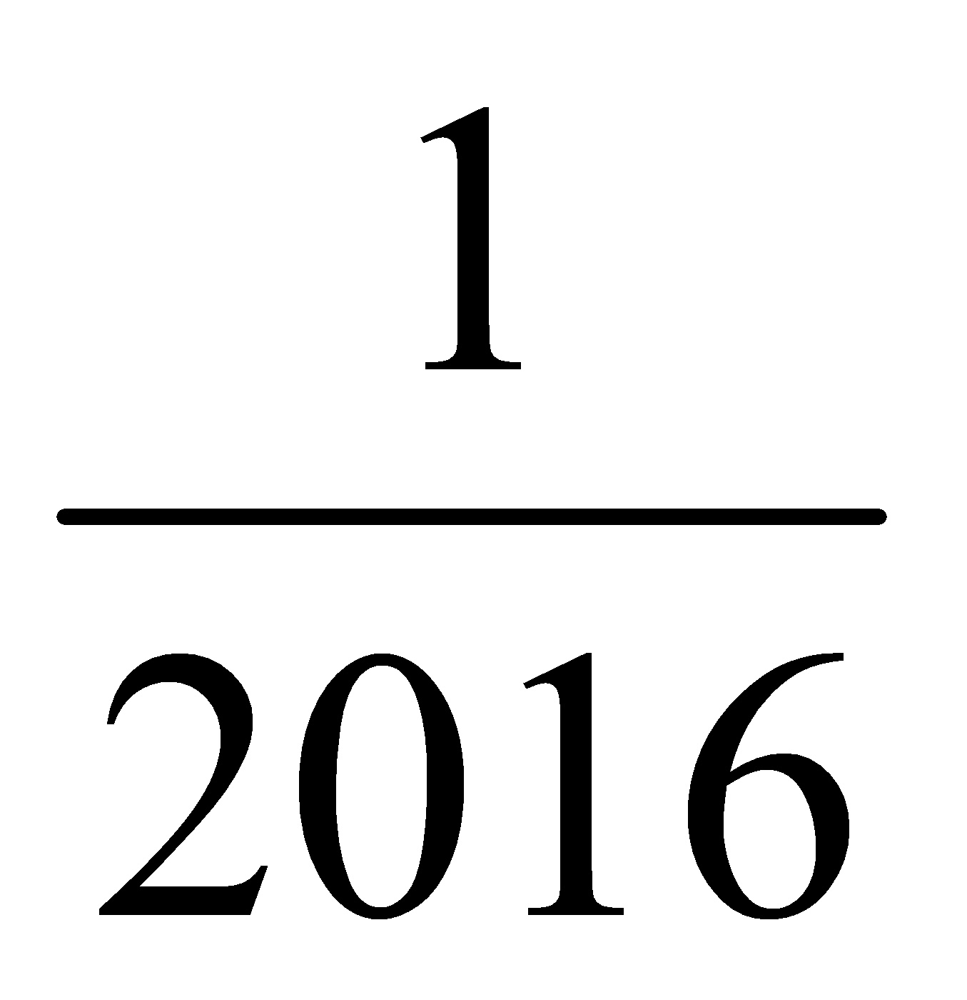
，最后结果是多少？题型08 有理数四则混合运算的实际应用
【典例8】（23-24七年级上·河南郑州·开学考试）【流水行船】水库A与小镇B之间有一条河道，当水库不放水时，河道里的水不流动；当水库放水时，河道里的水匀速流动．在水库没有放水时，快艇M从A出发向B行驶了50分钟，经过了河道长度．此时水库放水，快艇又行驶河道长度，只用了20分钟．此时，驾驶员关闭快艇动力，任由快艇随河水漂流，又经过多少分钟快艇到达B?
【变式1】（23-24七年级上·江苏无锡·阶段练习）一出租车一天下午2小时内 以鼓楼为出发地在东西方向营运，向东走为正，向西走为负，行车里程（单位：公里）依先后次序记录如下： ，
， ，
， ，
， ，
， ，
， ．
．
(1)该车2小时内最远时在鼓楼什么方向?离鼓楼多远?将最后一名乘客送到目的地，该车在出发地什么方向?离出发地多远?
(2)若每公里收费为3元，且每百公里耗油10升，汽油价格每升6元，那么该司机这2小时除去汽油费后收入是多少?
(3)司机每天还要向出租车公司上交180元的管理费，若一天按照工作8小时计算，一月安28天算，问该司机辛苦一个月后的收入约为多少元?
【变式2】（23-24七年级上·浙江丽水·期末）如图1是1个纸杯和6个叠放在一起的纸杯的示意图，量得1个纸杯的高为 ，6个叠放在一起的纸杯的高为
，6个叠放在一起的纸杯的高为 ．
．
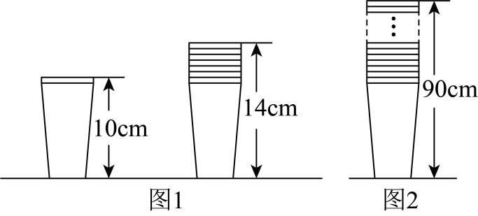
(1)问2个叠放在一起的纸杯的高是多少 ？
？
(2)若一批这样的纸杯按照图2的方式叠放，测得总高度为 ，求纸杯个数．
，求纸杯个数．
【变式3】（22-23七年级上·江苏扬州·阶段练习）为鼓励人们节约用水，某市居民生活用水实行“阶梯水价”收费，具体收费标准是：用户每月用水量在20吨及以内的为第一级水量基数，按一级用水价格收取；超过20吨且不超过30吨的部分为第二级水量基数，按一级用水价格的1.5倍收取；超过30吨的部分为第三级水量基数，按一级用水价格的1.8倍收取．为节约用水量，小高记录了1~7月份他家每月1号的水表读数．
1月 | 2月 | 3月 | 4月 | 5月 | 6月 | 7月 | |
水表读数（吨） | 433 | 450 | 468 | 485 | 500 | 514 | 535 |
(1)直接写出小高家1月份的用水量__________吨及1~6月平均每月用水量为____________吨．
(2)已知小高家2月份的水费为36元，试求他家6月份需缴纳水费多少元？
(3)7月份放暑假后，小高的爷爷、奶奶来到家里和小高一起生活，用水量明显增加，比6月份多用水14吨，试求小高家7月份需缴纳水费多少元？
(4)为节约水资源，请你提出一条生活中节约用水的合理建议．

一、单选题
1．（23-24七年级上·广东东莞·期末）式子
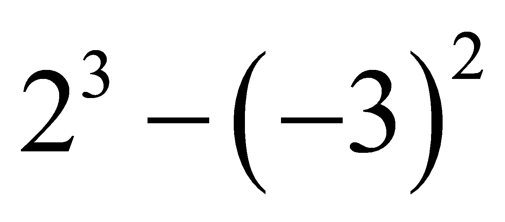
计算正确的是（ ）A．0 B． C．17 D．
C．17 D．
2．（22-23六年级上·山东烟台·期末）下列各式结果为正数的是（ ）
A． B．
B．
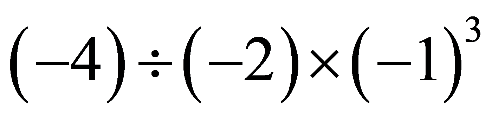
C． （n为正整数） D．
（n为正整数） D．
3．（22-23七年级上·河南信阳·阶段练习）下列计算正确的是（ ）
A．
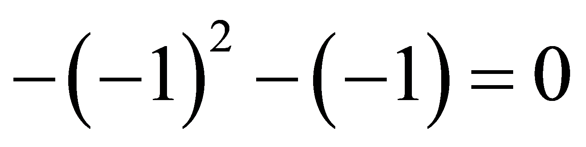
B．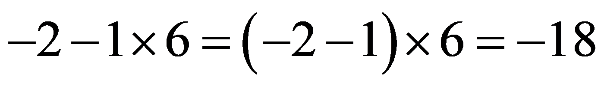
C． D．
D．
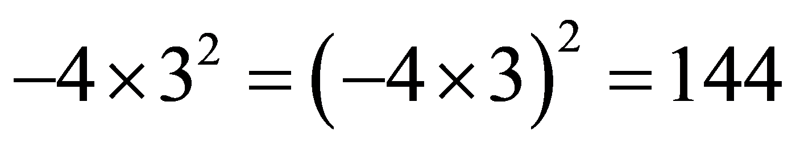
4．（23-24七年级上·广东珠海·期中）用“☆”定义一种新运算：对于任何不为零的整数a和b，
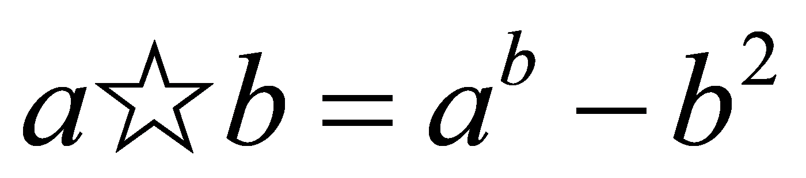
，例如： ，则
，则 的值为（ ）
的值为（ ）A． B．5 C．13 D．
5．（23-24七年级下·江苏连云港·期末）我国古代《易经》一书中记载，远古时期，人们通过在绳子上打结来记录数量，即“结绳计数”．一位母亲在从右到左依次排列的绳子上打结，采取满七进一的方式，用来记录孩子自出生后的天数．如图1，孩子出生后的天数是 （天），那么图2所表示孩子出生后的天数是（ ）
（天），那么图2所表示孩子出生后的天数是（ ）
A．1234天 B．466天 C．396天 D．284天
二、填空题
6．（23-24七年级上·福建莆田·期末）求值： ．
7．（24-25七年级上·全国·随堂练习）按照以下程序图输入 的值为
的值为 ，则输出的
，则输出的 值为 ．
值为 ．

8．（23-24七年级上·贵州毕节·期末）若a，b互为倒数，c，d互为相反数， ，则的值是 ．
，则的值是 ．
9．（23-24六年级上·山东威海·期末）有一种“二十四点”游戏，其游戏规则是：任取1至13之间的四个自然数，将这四个数（每个数用且只用一次，可以加括号）进行有理数混合运算，使其结果等于24．现有四个有理数，请仿照“二十四点”游戏规则写出一个算式 ，使其结果等于24．
10．（2024·甘肃·中考真题）定义一种新运算*，规定运算法则为： （m，n均为整数，且
（m，n均为整数，且 ）．例：
）．例： ，则 ．
，则 ．
三、解答题
11．（23-24七年级上·江苏宿迁·期中）计算：
(1)；
(2) ．
．
12．（23-24七年级上·江苏无锡·阶段练习）计算：
(1)
(2)
(3)
(4)
13．（2024七年级上·全国·专题练习）计算：
(1) ；
；
(2) ；
；
(3)；
(4)．
14．（23-24七年级上·江苏徐州·期末）我们常用的数是十进制数，计算机程序使用的是二进制数（只有数码0和1），它们两者之间可以互相换算，如：将 ，
， 换算成十进制数应为：
换算成十进制数应为： ，
，
．按此方式，将二进制换算成十进制数．
15．（23-24七年级上·贵州遵义·阶段练习）淇淇在计算 时，步骤如下：
时，步骤如下：
解：原式①
 ②
②
 ③
③
(1)请指出淇淇在第一步中的两处错误原因______、______；
(2)请给出正确的解题过程．
16．（22-23七年级上·河南洛阳·期末）用“☆”定义一种新运算：对于任意有理数a和b，规定．如： ．
．
(1)求的值；
(2) 的值．
的值．
17．（2024七年级上·江苏·专题练习）小明在计算 这道题时，他看到每一项的分母之间有倍数关系，所以他设
这道题时，他看到每一项的分母之间有倍数关系，所以他设 ．①
．①
那么，  ．②
．②
接着他将 ，结果这样操作没有办法较为简便地计算出结果．于是，他拿着题目去问老师，老师告诉他，可以，得
，结果这样操作没有办法较为简便地计算出结果．于是，他拿着题目去问老师，老师告诉他，可以，得
．
．
．
请你模仿上述求解的方法，进行计算：
(1)；
(2)．
18．（22-23七年级上·安徽合肥·期末）观察下列等式：； ；
； ；；
；； ；
；
按照以上规律，解决下列问题：
(1)请写出两个等式： ， ；
， ；
(2)根据以上式子的规律，请写出第 个式子；（为正整数）
个式子；（为正整数）
(3)利用这个规律计算 的值．
的值．